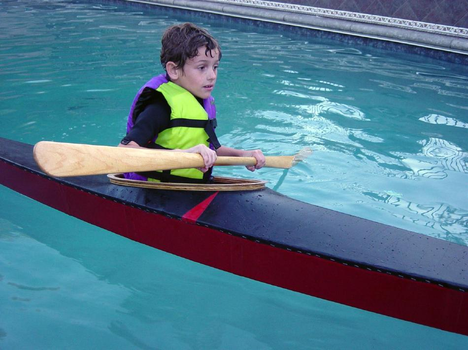

| Sea Flea 11 - Sea Flea 12 | Menu Previous Page Next Page |
|

Sawyer Phillips ( Age 8 and 55 lbs.) conducts "pool trials" in his new Sea Flea 12. The Sea Flea is designed for smaller paddlers in the 50lb to 100lb range. Deck rigging and gunwale rub strips have yet to be added to this wood frame non-folding version. To better fit Sawyer, the coaming has been sized at 18" X 14".
Offsets / Drawings for both versions can be found at the end of the Sea Flea section. |
|